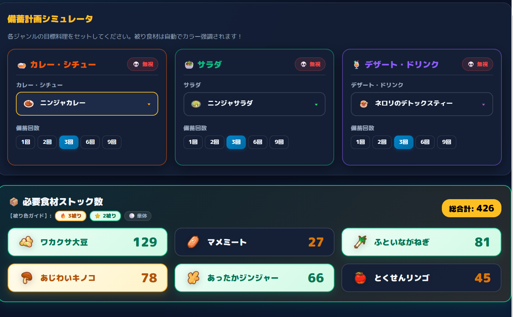
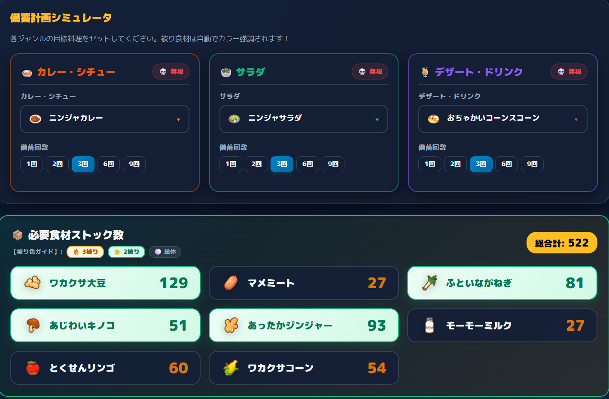
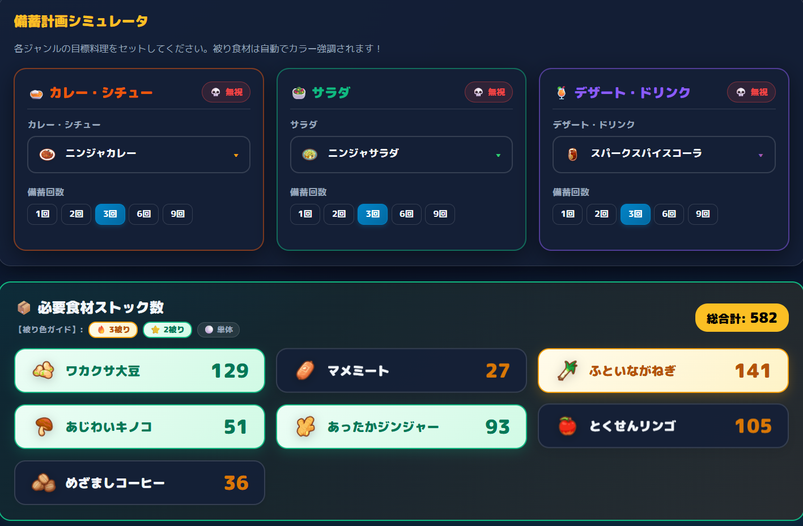
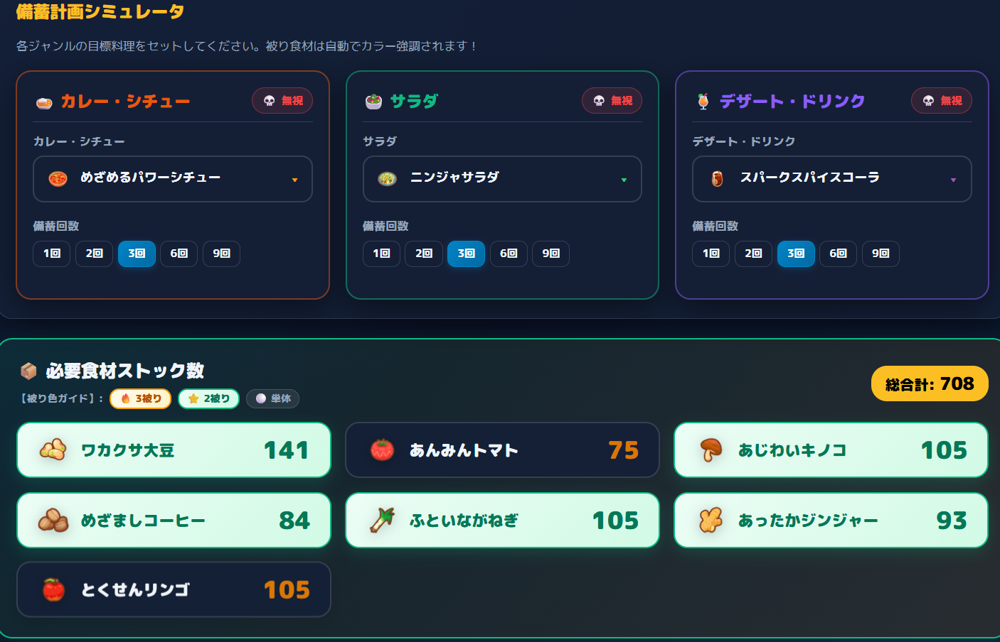
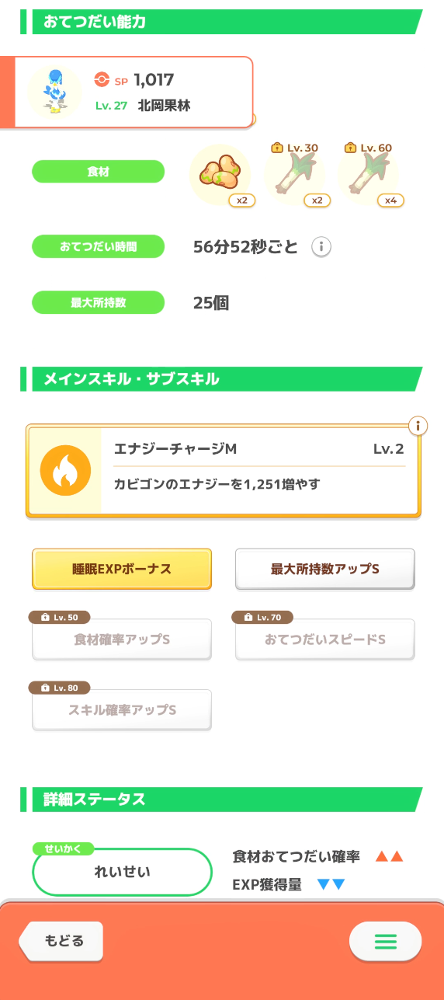

ニンジャサラダの寿命が長すぎる！鍋容量57〜94まで現役な理由とABBウェーニバルの圧倒的強み
- 1. ネギ料理の王様「ニンジャサラダ」はなぜここまで息が長いのか？
- 2. 【鍋容量 57〜66】ラピス解放直後の鉄板トリオ（カレー・サラダ・デトックスティー）
- 3. 【鍋容量 67〜76】スコーン進化でさらにエナジー爆上げ！
- 4. 【鍋容量 87〜91】未来の鍋拡張でもトップ君臨！スパイスコーラとの相乗効果
- 5. 【鍋容量 92〜94】超極大環境でも現役！めざめるパワーシチューとの最強タッグ
- 6. だからこそ「ABBウェーニバル（大豆/ネギ）」の厳選を強く推したい！
- 7. 【筆者の相棒】ABBウェーニバル紹介＆本音コメント（銀種問題・カモネギ比較）
- 8. まとめ：3ジャンル最適備蓄シミュレーターで未来の料理計画を立てよう！
1. ネギ料理の王様「ニンジャサラダ」はなぜここまで息が長いのか？
今回は、ポケモンスリープのネギ料理の代表格である「ニンジャ系（特にニンジャサラダ）」の驚異的な寿命の長さについて語っていきたいと思います！
僕自身、ラピスラズリ湖畔を解放するまでは料理にそこまで強いこだわりがなく、強い料理もあまり作れていませんでした。しかし、ラピス以降でネギや大豆が集まるようになってから、料理環境が一変しました。
2. 【鍋容量 57〜66】ラピス解放直後の鉄板トリオ（カレー・サラダ・デトックスティー）
まず、鍋容量57〜66（ラピスラズリ湖畔解放〜ゴールド旧発電所手前）の段階です。
この鍋容量帯での最適備蓄トリオは：
- 🍛 ニンジャカレー
- 🥗 ニンジャサラダ
- ☕ ネロリのデトックスティー

大豆・キノコ・ネギ・リンゴ・ジンジャーなど、共通する食材が多く、手持ちの食材得意ポケモンを絞って一気に備蓄できる非常に美しい構成です。
3. 【鍋容量 67〜76】スコーン進化でさらにエナジー爆上げ！
続いて鍋容量が67〜76まで拡張された段階です。
デザート枠が「ネロリのデトックスティー」から「お茶会コーンスコーン」へグレードアップしますが、カレーとサラダは依然としてニンジャカレー＆ニンジャサラダが最適解として君臨します！

4. 【鍋容量 87〜91】未来の鍋拡張でもトップ君臨！スパイスコーラとの相乗効果
現状の基礎最大鍋容量（81個）を超える、将来的な鍋容量87〜91個の世界です。
デザート枠が超大型の「スパークスパイスコーラ」へ進化しても、やはりサラダ枠の最高峰は「ニンジャサラダ」（カレーはニンジャカレーまたはワカクサカレーパン）です！

5. 【鍋容量 92〜94】超極大環境でも現役！めざめるパワーシチューとの最強タッグ
さらに先、鍋容量が92〜94個という極大環境になった場合です。
カレー枠が最高峰の「めざめるパワーシチュー」に変わっても、サラダ枠は依然として「ニンジャサラダ」が堂々のトップに居座り続けます！

6. だからこそ「ABBウェーニバル（大豆/ネギ）」の厳選を強く推したい！
このシミュレーション結果から導き出される結論は1つです。
いいキャンプチケットを使わない普段の週でも、ネギを主軸にした備蓄構成は非常に安定して高エナジーを叩き出せます。
7. 【筆者の相棒】ABBウェーニバル紹介＆本音コメント
最後に余談として、僕がラピスラズリ湖畔で手に入れた自慢の相棒「ABBウェーニバル」をご紹介します！

| 食材構成 | Lv.1 ワカクサ大豆 ×2 Lv.30 ふといながねぎ ×2 Lv.60 ふといながねぎ ×4 |
|---|---|
| サブスキル | Lv.10: 睡眠EXPボーナス Lv.25: 食材確率アップM Lv.50: 最大所持数アップL (Lv.70: おてつだいスピードM) |
| 性格 | れいせい（食材おてつだい確率▲▲ / EXP獲得量▼▼） |
ラピスでぐっすりリサーチが重なって厳選していたら、この強い子が来てくれました！「れいせい＋食材M＋所持L＋おてスピM」という驚異的な構成で、実は「AAAカモネギ（食材Mのみ）」よりも多くのネギを持ってこれる圧倒的ポテンシャルを秘めています！
8. まとめ：3ジャンル最適備蓄シミュレーターで未来の料理計画を立てよう！
今回は、ニンジャサラダの息の長さと、ABBウェーニバルの圧倒的な将来性についてご紹介しました。
当サイトの「3ジャンル最適備蓄シミュレーター」を使えば、手持ちの鍋容量や除外食材を設定するだけで、誰でも簡単に最高効率の料理トリオを見つけることができます。ぜひご活用ください！